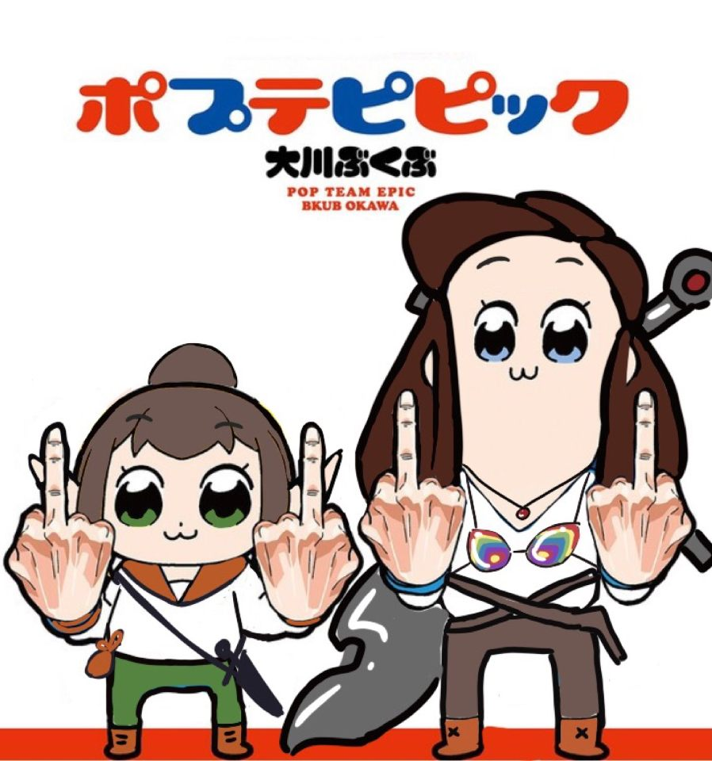

Storybook Campaign
Hi everyone! Here's a collection of art, music, and any other creative works produced by us that are related to the d&d campaign from our sophmore year. This is a very simple webpage because I'm not super skilled with html yet, but I hope you all like it! If I missed anything, be sure to let me know and I'll add it in!To navigate the page and search for specific works or categories, press Ctrl+F to open a search bar.
If you aren't in this d&d campaign... this will make no sense to you, but enjoy anyway I guess?
Visual Art
Comics, sketches, paintings, and jokes -- we've produced a lot of this stuff! I'll try to make it sequential, and if you want art by a specific artist, search their name with Ctrl+F. Because of some GroupMe glitch, some images were shrunken and lowered in quality when I transferred them here, so please, if this happened to a piece you did, DM me another picture of it and I'll replace the one here with it.Canon and Canon-adjacent
There's a ton of this, so I've given it its own page. You can find it all over here. This is where all the things that happened in canon are, along with things that maybe didn't necessarily happen, but are set in (or based off of) the canon universe, more or less. It's also where portraits of characters are.Alternate Universe
Here's the true alternate universe content. Sheriff Larawyn - Moira
1920's AU - Henry
Star Wars - Henry

No matter the setting, Allie always loves Percy - Henry

College AU Allie and Larawyn go to their first ren faire
College AU (get it?) Allie and Alex - Rae

College AU Larawyn feeds Allie a cigarette, Alex panics

College AU Allie and Alex - Moira
This one might actually be canon... - Henry

Pop Team Epic Larawyn and Alex edit - Moira
